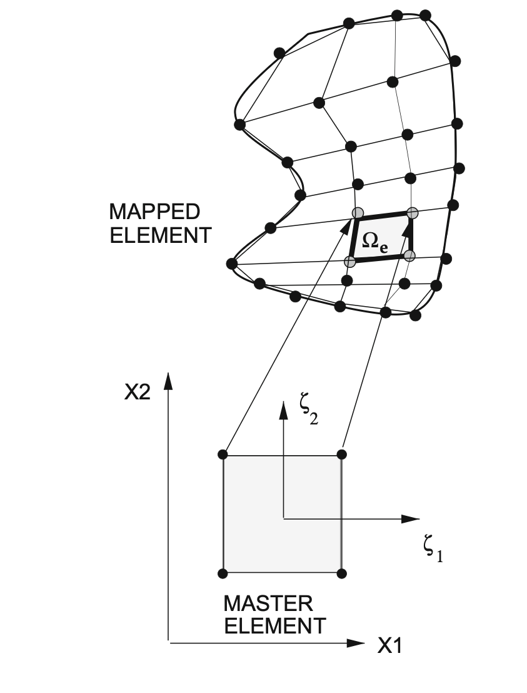
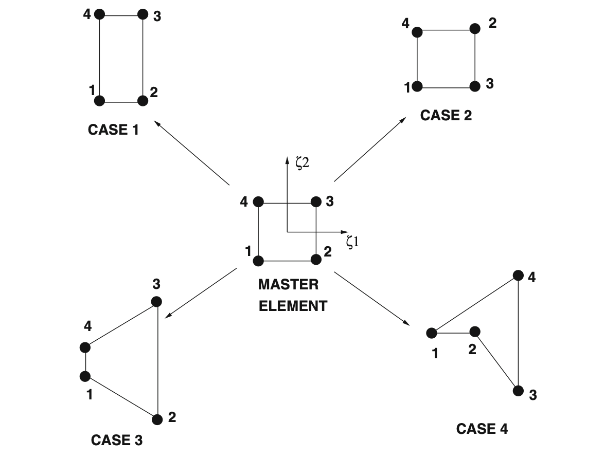

7 From 1D to Multi-Dimensional FEM
7.1 Mathematical Preliminaries
Looking at the following equation:
\[ \text{div}(\mathbf{K}\cdot \text{grad}(T)) \]
if \(\mathbf{K}\) is a constant multiplied by the identity matrix, we can write it as:
\[ \text{div}(\mathbf{K}\cdot \text{grad}(T)) = \text{div}(\mathbf{K} \left [\frac{\partial T}{\partial x} \mathbf{e}_1 +\frac{\partial T}{\partial y} \mathbf{e}_2+\frac{\partial T}{\partial z} \mathbf{e}_3 \right ]) = \mathbf{K} \left ( \frac{\partial^2 T}{\partial x^2}+\frac{\partial^2 T}{\partial y^2}+\frac{\partial^2 T}{\partial z^2} \right) = \mathbf{K}\nabla^2T \]
7.1.1 Temperature as a Scalar Field
\[ T \text{ - Scalar} \Rightarrow \text{grad}(T) = \left(\frac{\partial T}{\partial x}\mathbf{e_1} + \frac{\partial T}{\partial y}\mathbf{e_2} + \frac{\partial T}{\partial z}\mathbf{e_3}\right) \text{ - vector} \]
7.1.2 Conductivity Matrix Operation
\[ \mathbf{K} \cdot \text{grad}(T) = \begin{bmatrix} K_{11} & K_{12} & K_{13} \\ K_{21} & K_{22} & K_{23} \\ K_{31} & K_{32} & K_{33} \end{bmatrix} \text{transpose}\left(\left(\frac{\partial T}{\partial x}\mathbf{e_1} + \frac{\partial T}{\partial y}\mathbf{e_2} + \frac{\partial T}{\partial z}\mathbf{e_3}\right)\right) \]
7.1.3 Heat Flux Vector
Let’s define \(\mathbf{q} = -\mathbf{K} \cdot \text{grad}(T)\) as the heat flux vector.
Divergence of heat flux:
\[ \text{div}(\mathbf{q}) = \frac{\partial q_x}{\partial x} + \frac{\partial q_y}{\partial y} + \frac{\partial q_z}{\partial z} \]
7.2 The Product Rule for Divergence
To answer the question “What happens when we multiply the heat conduction equation by a test function V?”, we need to use the product rule for divergence:
\[ \text{div}(V \mathbf{K} \text{ grad}(T)) = \text{grad}(V) \cdot \mathbf{K} \cdot \text{grad}(T) + V \text{ div}(\mathbf{K} \cdot \text{grad}(T)) \]
However, if \(\mathbf{K}=k\) is constant, we can simplify this to:
\[ \text{div}(V \mathbf{K} \text{ grad}(T))=k\text{div}(V \text{ grad}(T))=k(\text{grad}(V) \cdot \text{grad}(T) + V \nabla^2(T)) \]
7.2.1 Detailed Expansion
Let’s expand \(\text{div}(V \mathbf{K} \text{ grad}(T))\) step by step:
\[\text{div}(V \mathbf{K} \text{ grad}(T)) = \frac{\partial}{\partial x}\left(V K \frac{\partial T}{\partial x}\right) + \frac{\partial}{\partial y}\left(V K \frac{\partial T}{\partial y}\right) + \frac{\partial}{\partial z}\left(V K \frac{\partial T}{\partial z}\right)\]
Applying the product rule to each term:
\[ = \frac{\partial V}{\partial x} K \frac{\partial T}{\partial x} + \frac{\partial V}{\partial y} K \frac{\partial T}{\partial y} + \frac{\partial V}{\partial z} K \frac{\partial T}{\partial z} + V K \frac{\partial^2 T}{\partial x^2} + V K \frac{\partial^2 T}{\partial y^2} + V K \frac{\partial^2 T}{\partial z^2} \]
We can group these terms into two parts:
Gradient Terms:
\[ \text{grad}(V) \cdot \mathbf{K} \cdot \text{grad}(T) = \left(\frac{\partial V}{\partial x}, \frac{\partial V}{\partial y}, \frac{\partial V}{\partial z}\right) \cdot \mathbf{K} \cdot \left(\frac{\partial T}{\partial x}, \frac{\partial T}{\partial y}, \frac{\partial T}{\partial z}\right) \]
For constant K, this becomes:
\[ = K\left(\frac{\partial V}{\partial x} \frac{\partial T}{\partial x} + \frac{\partial V}{\partial y} \frac{\partial T}{\partial y} + \frac{\partial V}{\partial z} \frac{\partial T}{\partial z}\right) = A \]
Second Derivative Terms:
\[ V \text{ div}(\mathbf{K} \cdot \text{grad}(T)) = V K \left(\frac{\partial^2 T}{\partial x^2} + \frac{\partial^2 T}{\partial y^2} + \frac{\partial^2 T}{\partial z^2}\right) = B \]
7.2.2 The Key Relationship
From the product rule, we have:
\[ \text{div}(V \mathbf{K} \text{ grad}(T)) = A + B \]
Therefore:
\[ B = \text{div}(V \mathbf{K} \text{ grad}(T)) - A \]
Which gives us:
\[ \text{div}(\mathbf{K} \text{ grad}(T)) V = \text{div}(V \mathbf{K} \text{ grad}(T)) - \text{grad}(V) \cdot \mathbf{K} \cdot \text{grad}(T) \]
7.2.3 Physical Interpretation
This mathematical identity is the foundation for:
- Integration by parts in the weak formulation
- Converting strong form to weak form in finite element methods
- Moving derivatives from the solution to the test function
The term \(\text{div}(V \mathbf{K} \text{ grad}(T))\) will become a boundary integral when integrated over the domain, while \(\text{grad}(V) \cdot \mathbf{K} \cdot \text{grad}(T)\) becomes the bilinear form in the finite element formulation.
7.2.4 Weak Form Foundation
When integrated over a domain \(\Omega\), this relationship becomes:
\[\int_\Omega V \text{ div}(\mathbf{K} \text{ grad}(T)) \, d\Omega = \int_\Omega \text{div}(V \mathbf{K} \text{ grad}(T)) \, d\Omega - \int_\Omega \text{grad}(V) \cdot \mathbf{K} \cdot \text{grad}(T) \, d\Omega\]
Using the divergence theorem, the first integral on the right becomes a boundary integral, leading to the standard weak form used in finite element analysis.
7.3 FEM in 2D/3D: Heat Equation
7.3.1 Problem Setup
Governing equation: \(\text{div}(\mathbf{q}) = 0\) where we assumed that there is no source term for simplicity.
Constitutive equation (Fourier’s law): \(\mathbf{q} = -\mathbf{K} \cdot \text{grad}(T)\)
Boundary conditions:
- \(\Gamma_{T_0}: T = T_0\) (Essential BC)
- \(\Gamma_{T_1}: T = T_1\) (Essential BC)
- \(\Gamma_q: \mathbf{q} = \mathbf{q}^*_n\) (Natural BC)
where \(\mathbf{q}^*_n\) is the prescribed heat flux on the boundary \(\Gamma_q\) in the direction of the (outwards) normal to the surface.
Combined form: \(\text{div}(\mathbf{q}) = -\text{div}(\mathbf{K} \cdot \text{grad}(T)) = 0\)
7.4 Weak Form Derivation
Step 1: Multiply by test function V and integrate over domain
\[\int_\Omega \text{div}(\mathbf{K} \cdot \text{grad}(T)) V \, d\Omega = 0\]
Step 2: Apply the product rule result
\[\int_\Omega \text{div}(V \mathbf{K} \cdot \text{grad}(T)) \, d\Omega - \int_\Omega \text{grad}(V) \cdot \mathbf{K} \cdot \text{grad}(T) \, d\Omega = 0\]
Step 3: Apply divergence theorem to first integral
\[\int_\Omega \text{div}(V \mathbf{K} \cdot \text{grad}(T)) \, d\Omega = \int_\Omega \text{div}(V \mathbf{q}) \, d\Omega = \int_{\partial\Omega} V \mathbf{q} \cdot \mathbf{n} \, d\Gamma\]
Final weak form:
\[\int_{\partial\Omega} V \mathbf{q} \cdot \mathbf{n} \, d\Gamma - \int_\Omega \text{grad}(V) \cdot \mathbf{K} \cdot \text{grad}(T) \, d\Omega = 0\]
Finite element approximation:
\[V_h = \sum_{i=1}^N b_i \phi_i(x,y), \quad T_h = \sum_{j=1}^N a_j \phi_j(x,y) \Rightarrow \{a_j\}\]
7.5 2D/3D Finite Elements: Geometry and Shape Functions
7.5.1 Transition from 1D to 2D/3D
Key differences:
- 1D: Geometric description is simpler - element domain is simply a line
- 2D/3D: Geometry plays a crucial role and complexity increases significantly
Most common finite element geometries:
- 2D: Triangular elements and Rectangular elements
- 3D: Tetrahedron elements and Hexahedron elements
7.5.2 2D Rectangular Elements: Linear Shape Functions
Design requirements for shape functions:
- Simplicity: Describe change in the element’s domain with minimal complexity
- Local support: Each shape function corresponds to one node, value of “1” at one node, “0” at all other nodes
1D analogy: \(u^e = a_i \phi_i^g + a_{i+1} \phi_{i+1}^g\) (where \(u^e \in [x_i, x_{i+1}]\))
2D extension: For a linear rectangular element, we need four shape functions to describe \(u^e\)
7.5.3 Rectangular Element with Linear Shape Functions
Consider a rectangular element with nodes numbered as follows:
4 ────── 3
│ │ b
│ ue │
│ │
1 ────── 2
aShape functions for specific rectangular element:
\[\phi_1^g = \frac{1}{ab}(a-x)(b-y)\]
\[\phi_2^g = \frac{1}{ab}x(b-y)\]
\[\phi_3^g = \frac{1}{ab}xy\]
\[\phi_4^g = \frac{1}{ab}(a-x)y\]
Verification:
- \(\phi_1^g(0,0) = 1\), \(\phi_1^g(a,0) = 0\), \(\phi_1^g(0,b) = 0\), \(\phi_1^g(a,b) = 0\) ✓
- \(\phi_2^g(0,0) = 0\), \(\phi_2^g(a,0) = 1\), \(\phi_2^g(0,b) = 0\), \(\phi_2^g(a,b) = 0\) ✓
Element solution: \(u^e = a_1 \phi_1^g + a_2 \phi_2^g + a_3 \phi_3^g + a_4 \phi_4^g = u^e(x,y)\)
7.6 Master Element Concept in 2D
7.6.1 Mapping to Master Element
Purpose: Map general elements to a standardized master element for easier computation
Coordinate transformation: \([x,y] \rightarrow [\zeta_1, \zeta_2] \in [-1,1] \times [-1,1]\)
Master element node numbering convention:
4 ────── 3 ζ₂
│ │ ↑
│ │ │
│ │ │
1 ────── 2 └─→ ζ₁Master element shape functions:
\[\hat{\phi}_1 = \phi_1^e(\zeta_1, \zeta_2) = \frac{1}{4}(1-\zeta_1)(1-\zeta_2)\]
\[\hat{\phi}_2 = \phi_2^e(\zeta_1, \zeta_2) = \frac{1}{4}(1+\zeta_1)(1-\zeta_2)\]
\[\hat{\phi}_3 = \phi_3^e(\zeta_1, \zeta_2) = \frac{1}{4}(1+\zeta_1)(1+\zeta_2)\]
\[\hat{\phi}_4 = \phi_4^e(\zeta_1, \zeta_2) = \frac{1}{4}(1-\zeta_1)(1+\zeta_2)\]
Bi-linear nature: Each \(\hat{\phi}_i\) equals “1” at the \(i\)-th node and “0” at other nodes, creating bi-linear shape functions.
Example expansion: \(\hat{\phi}_1 = \frac{1}{4}(1-\zeta_1)(1-\zeta_2) = \frac{1}{4}(1-\zeta_1-\zeta_2+\zeta_1\zeta_2)\)
The term \(\zeta_1\zeta_2\) makes it bi-linear (linear in both coordinates).

7.7 Jacobian and Coordinate Transformation
7.7.1 Jacobian Matrix
Definition:
\[\mathbf{F} = \begin{bmatrix} \frac{\partial x}{\partial \zeta_1} & \frac{\partial x}{\partial \zeta_2} \\ \frac{\partial y}{\partial \zeta_1} & \frac{\partial y}{\partial \zeta_2} \end{bmatrix}, \quad J = \text{Det}(\mathbf{F}) = \frac{\partial x}{\partial \zeta_1}\frac{\partial y}{\partial \zeta_2} - \frac{\partial x}{\partial \zeta_2}\frac{\partial y}{\partial \zeta_1}\]
Critical requirement: \(J > 0\) throughout the element for a “good” mapping
7.7.2 Isoparametric Mapping
We will use isoparametric mapping, where the same shape functions are used for both geometry and field variables.
Coordinate transformation:
\[x (\chi_1,\chi_2)= \sum_{i=1}^4 \chi_{1i} \hat{\phi}_i = \chi_{11}\hat{\phi}_1 + \chi_{12}\hat{\phi}_2 + \chi_{13}\hat{\phi}_3 + \chi_{14}\hat{\phi}_4\]
\[y(\chi_1, \chi_2) = \sum_{i=1}^4 \chi_{2i} \hat{\phi}_i\]
Where \(\chi_{1i}\) are global x-coordinates and \(\chi_{2i}\) are global y-coordinates of element nodes.
7.8 Element Quality: Good vs Bad Elements
7.8.1 Acceptable Elements
Case 1 - Rectangular element: \(0 < J(\zeta_1, \zeta_2) < \infty\) throughout element
- Jacobian is constant
- Acceptable
Case 3 - Distorted but convex: \(0 < J(\zeta_1, \zeta_2) < \infty\) throughout element
- Jacobian varies but remains positive and bounded
- Acceptable
7.8.2 Unacceptable Elements
Case 2 - Incorrect node numbering: \(J(\zeta_1, \zeta_2) < 0\) throughout element
- Nodes numbered incorrectly, turning element “inside out”
- Unacceptable
Case 4 - Partially negative Jacobian: \(J(\zeta_1, \zeta_2) < 0\) in some regions
- Can cause singularities in stiffness matrix
- Unacceptable

Key insight for linear elements: The primary indicator of problematic elements is non-convexity, even with correct numbering.
7.9 Bookkeeping in 2D Finite Elements
7.9.1 Difference from 1D
1D: Node numbering is intuitive and element connectivity is straightforward
1 ── 2 ── 3 ── 4 ── 5 ── 6 ── 7 ── 8 ── 92D: More complex connectivity patterns require systematic bookkeeping
7.9.2 Element Connectivity Tables
Element-to-node connectivity:
| Element | Node 1 | Node 2 | Node 3 | Node 4 |
|---|---|---|---|---|
| 1 | 20 | 21 | 2 | 1 |
| 2 | 21 | 22 | 3 | 2 |
Node coordinate table:
| Node | X-coord | Y-coord |
|---|---|---|
| 1 | X₁ | Y₁ |
| 2 | X₂ | Y₂ |
| … | … | … |
Importance: Essential for assembling the global stiffness matrix \([K_{ij}^g]\) and load vector \(\{F_i^g\}\), and for enforcing boundary conditions.
7.10 Shape Functions: Differential Properties
7.10.1 Coordinate Transformation Relations
Forward transformation (ζ → x):
\[\frac{\partial}{\partial \zeta_1} = \frac{\partial}{\partial x}\frac{\partial x}{\partial \zeta_1} + \frac{\partial}{\partial y}\frac{\partial y}{\partial \zeta_1}\]
\[\frac{\partial}{\partial \zeta_2} = \frac{\partial}{\partial x}\frac{\partial x}{\partial \zeta_2} + \frac{\partial}{\partial y}\frac{\partial y}{\partial \zeta_2}\]
Inverse transformation (x → ζ):
\[\frac{\partial}{\partial x} = \frac{\partial}{\partial \zeta_1}\frac{\partial \zeta_1}{\partial x} + \frac{\partial}{\partial \zeta_2}\frac{\partial \zeta_2}{\partial x}\]
\[\frac{\partial}{\partial y} = \frac{\partial}{\partial \zeta_1}\frac{\partial \zeta_1}{\partial y} + \frac{\partial}{\partial \zeta_2}\frac{\partial \zeta_2}{\partial y}\]
Matrix form:
\[\begin{bmatrix} dx \\ dy \end{bmatrix} = \mathbf{F} \begin{bmatrix} d\zeta_1 \\ d\zeta_2 \end{bmatrix}, \quad \begin{bmatrix} d\zeta_1 \\ d\zeta_2 \end{bmatrix} = \mathbf{F}^{-1} \begin{bmatrix} dx \\ dy \end{bmatrix}\]
7.10.2 Gradient Calculation in Master Element
For test function V:
\[\text{grad}(V) = \begin{bmatrix} \frac{\partial V}{\partial x} \\ \frac{\partial V}{\partial y} \end{bmatrix} = \begin{bmatrix} \frac{\partial \zeta_1}{\partial x} & \frac{\partial \zeta_2}{\partial x} \\ \frac{\partial \zeta_1}{\partial y} & \frac{\partial \zeta_2}{\partial y} \end{bmatrix}^T \begin{bmatrix} \frac{\partial V}{\partial \zeta_1} \\ \frac{\partial V}{\partial \zeta_2} \end{bmatrix}\]
For temperature field T:
\[\text{grad}(T) = \begin{bmatrix} \frac{\partial T}{\partial x} \\ \frac{\partial T}{\partial y} \end{bmatrix} = \begin{bmatrix} \frac{\partial \zeta_1}{\partial x} & \frac{\partial \zeta_2}{\partial x} \\ \frac{\partial \zeta_1}{\partial y} & \frac{\partial \zeta_2}{\partial y} \end{bmatrix}^T \begin{bmatrix} \frac{\partial T}{\partial \zeta_1} \\ \frac{\partial T}{\partial \zeta_2} \end{bmatrix}\]